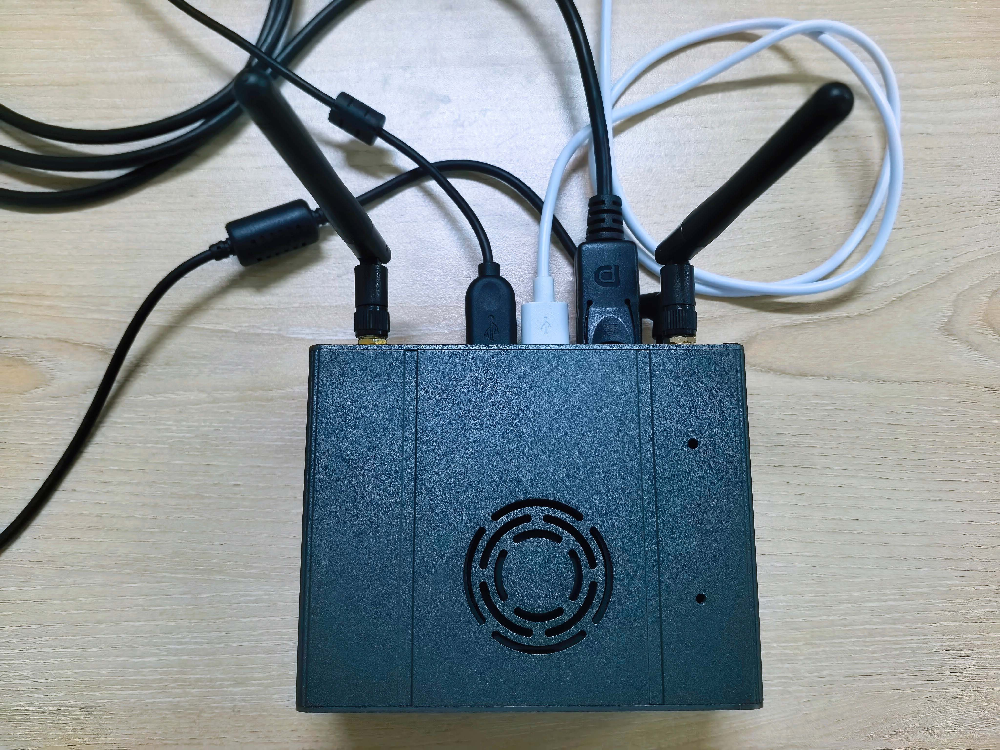
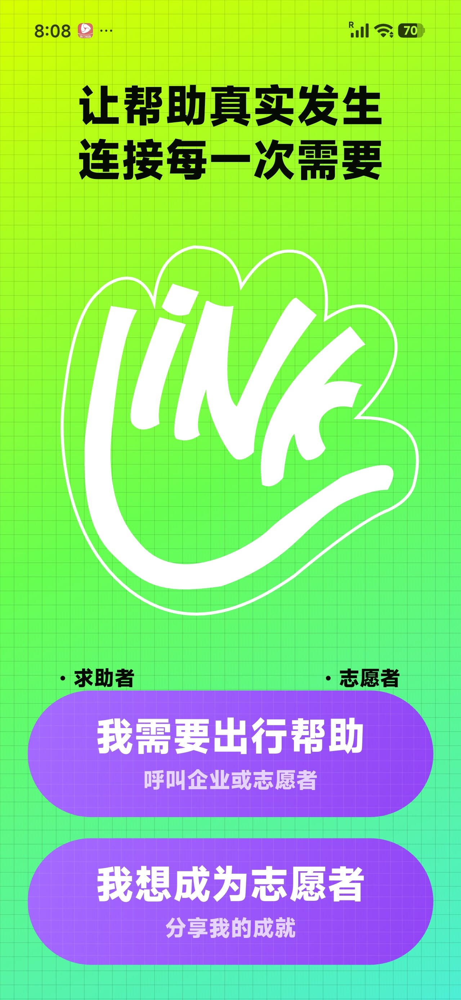
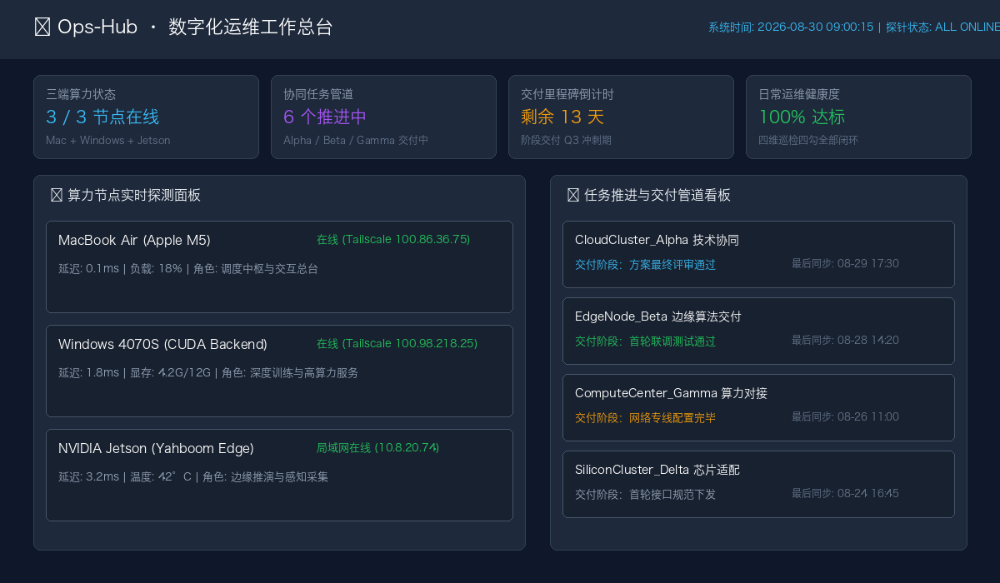

我是刘钢 (Leo)。致力于将前沿深度学习模型、端侧边缘感知模组与多智能体协作架构转化为坚固可靠的工程交付。 已沉淀 14 项自主软件著作权、8 项国家与省部级竞赛大奖及多项企业级高并发系统落地经验。
深度剖析从学术理论、算法推演到现场实物部署的代表性工程全案。

第十九届“西门子杯”中国智能制造挑战赛全国总决赛二等奖成果（答辩 82 分）。针对工业制造现场违规作业与危险入侵，研发部署于 NVIDIA Jetson 的现场级边缘视觉预警系统。
中国研究生电子设计竞赛省级二等奖项目。专为盲人及低视力群体研发的普惠性辅助出行平台。结合端侧视觉感知多模态问答与就近地理位置的社会化志愿者极速抢单互助。


“让流程和环境帮我做决定，不靠意志力硬撑”。贯通 Mac 移动中枢、Windows 4070S 深度计算后端与 Jetson 边缘感知节点，实现自动化任务分流决策推导与早晚静默自动同步。
未找到符合搜索条件的项目
在全国研究生顶尖赛事与行业挑战赛中持续斩获佳绩，验证算法与工程硬实力。
大规模高维非线性时空大数据拟合、离散状态空间搜索与全局多目标优化
证书: 华为杯数学建模-国二.pdf · 角色: 建模主笔工业边缘动态环境智能监测与多模态预警系统 · 现场答辩 82 分实物验证
成果转化: 软著 11 (CIMC-EdgeSafe) · 角色: 架构师面向视障群体的多模态智能导行与共感无障碍互助系统 (LinkAble)
成果转化: 软著 10 (LinkLab) · 角色: 队长基于大模型多智能体协同的特定人群智能自适应助学辅导系统
成果转化: 软著 04、05 · 角色: 全栈架构专家混合推理与威胁情报检索驱动的多智能体安全态势研判平台
成果转化: 软著 06 · 角色: RAG算法设计复杂集成电路系统原理图框图自动识别与拓扑网表重构算法
图论拓扑与目标检测融合 · 角色: 算法研发立足严谨的实验设计与数学推导，以真问题驱动学术探索与算法创新。
合作单位：上海工程技术大学 · 中国电信 · 中国电子科技集团第50研究所
解决复杂空地多源遥感图像下建筑背景高混淆与多尺度漏检难题。构建严格的 236 个 Holdout 单元人工复核与 12 段严选数据集。引入 YOLOv11 与 SAM 进行多尺度特征融合，P0 级别（39张475框）复核关门。
角色：学生第一作者 · 导师刘老师指导
针对双时相遥感图像变化检测模型参数量过大、边缘轮廓模糊及伪变化敏感问题，提出轻量级双分支特征解耦网络。全套高清矢量学术配图与 8 条修改意见审阅版已全部就绪。
在软件工程与学术研究中，我始终坚信系统化与确定性的力量。 无论是设计多智能体状态机还是管理多端算力，我都坚持「WIP=1 聚焦交付」、「零 Mock 真实度量」与「严密契约化容灾」。